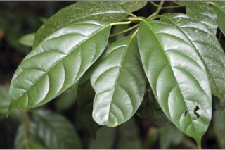
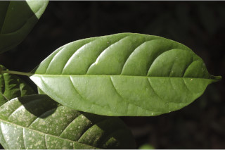
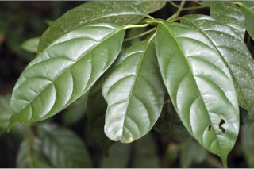
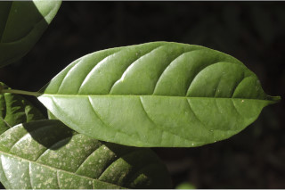

Trees up to 20 m tall.
20 ಮೀ. ಎತ್ತರದವರೆಗೆ ಬೆಳೆಯುವ ಮರಗಳು.
20 മീറ്റര് വരെ ഉയരത്തില് വളരുന്ന മരങ്ങള്.
மரங்கள் 20 மீ. உயரம் வரை வளரக்கூடியது.
Bark brownish, lenticellate.
ತೊಗಟೆ ಕಂದು ಬಣ್ಣ ಹೊಂದಿದ್ದು ಸೂಕ್ಷ್ಮ ವಾಯುವಿನಿಮಯ ಬೆಂಡು ರಂಧ್ರ ಸಮೇತವಾಗಿರುತ್ತವೆ.
ശ്വസനരന്ധ്രങ്ങളോടുകൂടിയ, തവിട്ടുനിറത്തിലുളള പുറംതൊലി.
மரத்தின் பட்டை ப்ரவுன் நிறமானது பட்டைத்துளைகள் (லெண்டிசெல்) உடையது.
Branchlets subterete, glabrous
ಕಿರುಕೊಂಬೆಗಳು ಉಪ- ದುಂಡಾಗಿದ್ದು ರೋಮರಹಿತವಾಗಿರುತ್ತವೆ.
അരോമിലമായതും ഏതാണ്ട് ഉരുണ്ടിരിക്കുന്നതുമായ ഉപശാഖകള്.
சிறிய நுனிக்கிளைகள் குறுக்குவெட்டுத் தோற்றத்தில் சற்று வளையம் போன்றது, உரோமங்களற்றது.
Exudates resinous.
ಜಿನುಗು ದ್ರವ ಅಂಟು ರೂಪದಲ್ಲಿರುತ್ತದೆ.
കൊഴുത്ത സ്രവം
பிசின் (ரெசின்) சுரக்ககூடியது.
Leaves simple, alternate, spiral; petiole 1-4 cm long, canaliculate, glabrous; lamina 6.5-16 x 2-10 cm, elliptic or obovate, apex caudate - acuminate with blunt tip (acumen 0.8-1.8 cm long), base cuneate to attenuate, margin entire or slightly revolute when dry, green above, pale beneath, glabrous; midrib canaliculate above; secondary_nerves 4-8 pairs gradually curved; tertiary_nerves somewhat closely_horizontally_percurrent.
ಎಲೆಗಳು ಸರಳವಾಗಿದ್ದು, ಪರ್ಯಾಯ ಮತ್ತು ಸುತ್ತು ಜೋಡನಾ ವ್ಯವಸ್ಥೆಯಲ್ಲಿರುತ್ತವೆ;ತೊಟ್ಟುಗಳು1-4 ಸೆಂ.ಮೀ. ಕಾಲುವೆ ಗೆರೆಯನ್ನು ಹೊಂದಿ ರೋಮರಹಿತವಾಗಿರುತ್ತವೆ; ಪತ್ರಗಳು 6.5 - 16 X 2 - 10 ಸೆಂ.ಮೀ. ಗಾತ್ರ ಹೊಂದಿದ್ದು ಅಂಡವೃತ್ತ ಅಥವಾ ಬುಗುರಿಯಾಕಾರದಲ್ಲಿದ್ದು ಮೊಂಡಾದ ಅಗ್ರವುಳ್ಳ ಬಾಲರೂಪಿ- ಕ್ರಮೇಣ ಚೂಪಾಗುವ ಮಾದರಿಯ ತುದಿ (ಅಗ್ರ 0.8 ರಿಂದ 1.8 ಸೆಂ.ಮೀ)ಬೆಣೆಯಾಕಾರದಿಂದ ಹಿಡಿದು ಒಳಬಾಗಿದ ಬುಡವನ್ನು ಹೊಂದಿರುತ್ತವೆ;ಎಲೆಯಂಚು ನಯವಾಗಿ ಅಥವಾ ಒಣಗಿದಾಗ ಹಿಂಸುರುಳಿಯನ್ನು ಹೊಂದಿರುತ್ತದೆ, ಪತ್ರದ ಮೇಲ್ಭಾಗ ಹಸುರಾಗಿದ್ದು ತಳಭಾಗ ಮಂದವಾದ ಬಣ್ಣವನ್ನು ಹೊಂದಿರುತ್ತದೆ ಹಾಗೂ ರೋಮರಹಿತವಾಗಿರುತ್ತದೆ; ಪತ್ರದ ಮೇಲ್ಭಾಗದಲ್ಲಿ ಮಧ್ಯನಾಳ ಕಾಲುವೆಗೆರೆ ಸಮೇತವಾಗಿರುತ್ತದೆ; ಎರಡನೇ ದರ್ಜೆಯ ನಾಳಗಳು 4 ರಿಂದ 8 ಜೋಡಿಗಳಿದ್ದು ಕ್ರಮೇಣವಾಗಿ ಬಾಗಿರುತ್ತವೆ;ಮೂರನೇ ದರ್ಜೆಯ ನಾಳಗಳು ಬಹುತೇಕವಾಗಿ ಕಡಿಮೆ ಅಂತರವುಳ್ಳ, ಲಂಬರೇಖೆಗೆ ಸಮಕೋನದಲ್ಲಿದ್ದುಲೆದಿಂಡಿಗೆ ಅಡ್ಡವಾಗಿ ಕೂಡುವಂತಹವು.
ഇലകള് ലഘുവും, ഏകാന്തരമായി വര്ത്തുളാകൃതിയില് അടുക്കിയതുമാണ്; ഇലഞെട്ട് 1 മുതല് 4 സെ.മീ വരെ നീളമുളളതും, ചാലോടുകൂടിയതും അരോമിലവുമാണ്; പത്രഫലകത്തിന് 6.5 സെ.മീ മുതല് 16 സെ.മീ വരെ നീളവും 2 സെ.മീ മുതല് 10 സെ.മീ വരെ വീതിയും ദീര്ഘവൃത്തീയമോ അപഅണ്ഡാകാരമോ ആണ്, പത്രാഗ്രം മുനപ്പില്ലാത്ത വാലോട് കൂടിയതാണ് (വാലിന് 0.8 സെ.മീ മുതല് 1.8 സെ.മീ വരെ നീളം), പത്രാധാരം ആപ്പാകാരത്തിലോ നീണ്ടുനേര്ത്തതോ ആണ്, അവിഭജിതമോ ഉണങ്ങുമ്പോള് ചെറുതായി അകത്തോട്ട് വളയുന്നതോ ആണ്, മുകളില് പച്ചനിറത്തോടെയും കീഴെ വിളറിയപോലെയുമാണ്, അരോമിലം; മുഖ്യസിര മുകളില് ചാലോട് കൂടിയതാണ്; സാവധാനം വളഞ്ഞുപോകുന്ന 4 മുതല് 8 വരെ ജോഡി ദ്വിതീയ ഞരമ്പുകള്; ത്രിതീയ ഞരമ്പുകള് ഏതാണ്ട് തിരശ്ചീനമായി പെര്കറന്റ് ആണ്.
இலைகள் தனித்தவை, மாற்றுஅடுக்கமானவை, சுழல் போன்று அமைந்தவை; இலைக்காம்பு 1-4 செ.மீ. நீளமானது, கேனாலிகுலேட், உரோமங்களற்றது; இலை அலகு 6.5-16 X 2-10 செ.மீ., நீள்வட்டம் அல்லது தலைகீழ் முட்டை வடிவமானது, அலகின் நுனி வால்-அதிக்கூரியது, அதன் முனை மழுங்கியது (கூரிய முனை 0.8-1.8 செ.மீ. நீளமுடையது), அலகின் தளம் ஆப்பு வடிவானது முதல் அட்டனுவேட், அலகின் விளிம்பு முழுமையானது அல்லது உலரும் போது சிறிது பின்புறம் வளைந்து (ரெவலுட்) காணப்படும், அலகின் மேற்பரப்பு பச்சையானது, கீழ்பரப்பு வெளிறிய நிறமானது, உரோமங்களற்றது; மையநரம்பு மேற்புறத்தில் அலகின் பரப்பைவிட பள்ளமானது; இரண்டாம் நிலை நரம்புகள் 4-8 ஜோடிகள், நன்கு படிப்படியாக வளைந்தது; மூன்றாம் நிலை நரம்புகள் சற்று நெருக்கமாக இணையானவைகளாக இரண்டாம் நிலை நரம்புகளை இணைக்கின்றன (பெர்க்கரண்ட்).
Inflorescence terminal panicles.
ಪುಷ್ಪಮಂಜರಿ ತುದಿಯಲ್ಲಿರುವ ಪುನರಾವೃತ್ತಿಯಾಗಿ ಕವಲೊಡೆಯುವ ಮಾದರಿಯವು.
പൂങ്കുലകള് ഉച്ഛസ്ഥ പാനിക്കിളുകളാണ്.
தண்டின் நுனியில் காணப்படும் பேனிக்கிள் வகை மஞ்சரி.
Drupe, ellipsoid, 1.8-3.8 x 2 cm, crowned by the scar of calyx-lobes, 1-seeded.
ಕಾಯಿಗಳು ಡ್ರೂಪ್ ಮಾದರಿಯಲ್ಲಿದ್ದು 1.8 -3.8 X 2 ಸೆಂ.ಮೀ ಗಾತ್ರ ಹೊಂದಿದ್ದು ಅಂಡವೃತ್ತಾಕಾರ ಹೊಂದಿರುತ್ತವೆ, ತುದಿಯಲ್ಲಿ ಪುಷ್ಪಪಾತ್ರೆಯ ಎಸಳುಗಳು ಉದುರಿದನಂತರವಾಗುವ ಗುರುತುಗಳಿರುತ್ತವೆ; ಬೀಜಗಳ ಸಂಖ್ಯೆ ಒಂದು.
കായ, ഒറ്റ വിത്തുളളതും, ബാഹ്യദളങ്ങളുടെ അടയാളങ്ങളാല് അലംകൃതമായ, 1.8 സെ.മീ മുതല് 3.8 സെ.മീ വരെ നീളമുളളതും 2 സെ.മീ വീതിയുളളതുമായ ദീര്ഘഗോളാകാര ഡ്രൂപ്പ് ആണ്.
உள்ளோட்டுத்தசைகனி (ட்ரூப்), நீள்வட்ட வடிவானது, 1.8-3.8 X 2 செ.மீ., கீரிடம் போன்ற புல்லி இதழ்கள் உதிர்ந்த தழும்புகளுடையது, ஓர் விதையுடையது.
 


